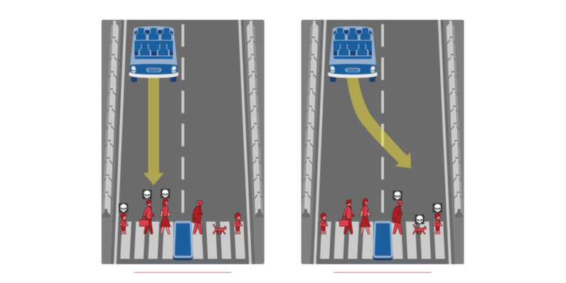

Explainable Reasoning in Face of Contradictions: From Humans to Machines
Dov Gabbay
Paper: Kampik & Gabbay. Explainable Reasoning in Face of Contradictions: From Humans to Machines.
#### Outline
* We claim that a key characteristic of intelligent behavior is the ability to make and **explain** decisions in the face of contradictions.
* We motivate this claim by looking at research in micro-economic theory and behavioral economics.
* We outline a set of future research directions.
What is (Artificial) Intelligence?
Moving target that captures the public imagination
What is (Artificial) Intelligence?
Principle-based reasoning and principle-based belief revision
#### Example: British Nationality Act
* $\Delta$
* Query from $\Delta$: can ${\cal A}$ get British passport?
* Program: **Prolog**; today we could use *Logica*
Sergot et al. *The British Nationality Act as a logic program*. 1986.
Tretyakov and Skvortsov (Google). *Logica Open Source Project*. 2021.
$\Delta$: can ${\cal A}$ get British passport?
* Answer: yes
Give trace of proof from $\Delta$
* Answer: no
Explanation: trace of attempted proof with output of what is missing
* (1) $a \rightarrow b$
* (2) $a$
* $?_{(1), (2)} b = $ yes, from (1), (2)
* $?_{(1)} b = $ no, (2) is needed
#### Choice
* Test for cancer inconclusive
* Program: **Default**; we infer:
* ${\cal H}$ is consistent to assume ${\cal A}$ has cancer
* ${\cal H}$ is consistent to assume ${\cal A}$ does not have cancer
* What we choose depends on our preference;
e.g., if we assume a cancer diagnosis, can we retire now with full pension?
Gabbay. Logic for AI and Information Technology (580pp). 2007.
#### What happens if data is inconsistent?
* All queries can be answered with `yes`
* We cannot explain without making a choice
* We need priorities
* We take a look at micro-economic decision theory and continue the example
#### What happens if data is inconsistent?
* When data is inconsistent, any conclusion can be derived.
* So we need priorities on the conclusions and we choose what we want.
* When more data arrived or when we restore consistency by deleting contradictions, we can reason again. There is a chance our priorities will change.
* What does it mean to be rational in this case?
Humans reason according to priorities
Milton Friedman
Human Reasoning has been studied for centuries
How should we make decisions?
How should we treat doubt?
Example: the Talmud and Shev Shema'tata.
Line from religious to legal reasoning
Line from religious reasoning to economic theory?
#### Economic Rationality
* Assumptions of economic rationality, **ceteris paribus** (if everything else equal):
* "Rational Economic Man" acts according to clear preferences
* Has consistent preferences over time
Clear Preferences
$a$: ${\cal A}$ has cancer; $b$: ${\cal A}$ does not have cancer
We want to retire now with full pension: $\{a\} \succeq \{b\}$ and we infer $a$.
Consistent Preferences
Guide and help explain our inference process.
$p$: Do we want to launch product $p'$?
(1): No objections: $\{p\}$
(2): inconsistent objections, we stay with $\{p\}$
Bounded Rationality
By now, we know that economic rationality is not a good model of human (intelligent) decision-making.
Lacks a model of knowledge.
Economists try to adjusts their models accordingly.
From Kahneman's empirical insights, Tversky built models for relaxing rationality
With formal argumentation, we can draw inferences in face of contradictions that are economically rational.
Kahneman, Daniel. *Maps of bounded rationality.* 2003.
Rubinstein, Ariel. *Modeling bounded rationality.* 1998.
#### Beyond Consistent Preferences: Airline Example
* ${\cal A}$ buys business class ticket, is entitled to 2 suitcases
* On check-in: first class is overbooked, system suggests:
a) Take compensation and take next flight
b) Change to economy, get only 1 suitcase
* The system can explain, but you cannot argue with it!
Gabbay et al. *Controlled Revision – A Preliminary Account*. 2003.
Attacks Explain Constraints for Preference Optimization
a: fly economy; b: fly business
c: take 2 suitcases; d: take compensation; e: arrive on time
Can we persuade the system to relax soft constraints?
Example: $\{a, c, e\}$ as a 'reasonable' compromise
#### Research Directions
* We cannot reason with the system and persuade it to relax the constraints
* For this we need to call the manager
* Our machine reasoner should be able to make a human-like decision, but according to consistent principles
Human-like decision, according to consistent principles

Robotic Taxi, one passenger.
Driving straight will kill 3 people, veering into the wall will kill one.
We want to stop time and argue with the robot driver.
#### Automated Reasoning and (Bounded) Economic Rationality
* How can we apply principles of (boundedly) rational decision-making to automated (non)-monotonic reasoning?
* How should we relax these principles?
Kampik & Gabbay. *Explainable Reasoning in Face of Contradictions: From Humans to Machines*. 2021.
Kampik & Gabbay. *Towards DiArg - An Argumentation-based Dialogue Reasoner*. 2020.
Kampik & Nieves. *Abstract Argumentation and the Rational Man*. 2021.
#### Principle-based Automated Reasoning and Intuitive Rationality
* What principles do humans find intuitive?
* Are these principles generally applicable, or are there domain-specific or population-specific differences?
Cramer & Guillaume. *Empirical cognitive study on abstract argumentation semantics*. 2018.
Cramer & Guillaume. *Empirical study on human evaluation of complex argumentation frameworks*. 2019.
Van der Torre & Vesic. *The principle-based approach to abstract argumentation semantics*. 2017.
Baroni & Giacomin. *On principle-based evaluation of extension-based argumentation semantics*. 2007.
#### Learning Reasoning Principles
* More and more works integrate symbolic reasoning and machine learning
* We can learn formal models that satisfy reasoning principles (like monotony properties)
* What practical guarantees can we get from these principles?
* How can we learn principles? Can we tie principles to rewards?
Questions?
Special Issue in the Journal of Applied Logics - IfCoLog Journal:
*Explainable Reasoning in Face of Contradictions: Cross-disciplinary Perspectives*
[Link to the paper](https://people.cs.umu.se/tkampik/reports/Kampik_Gabbay_reasoning_contradictions.pdf)